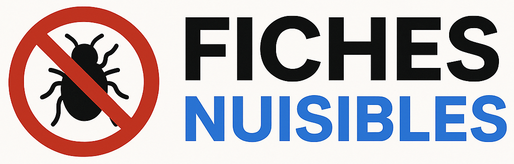
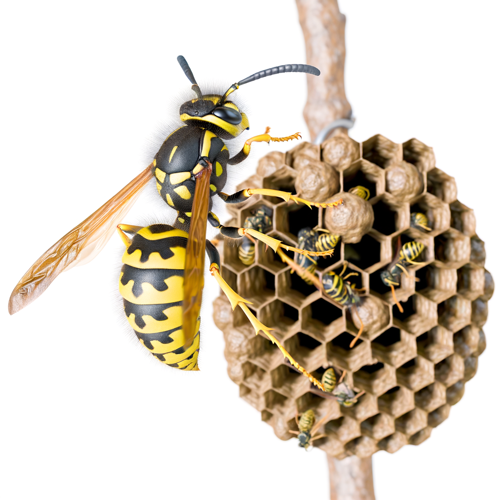
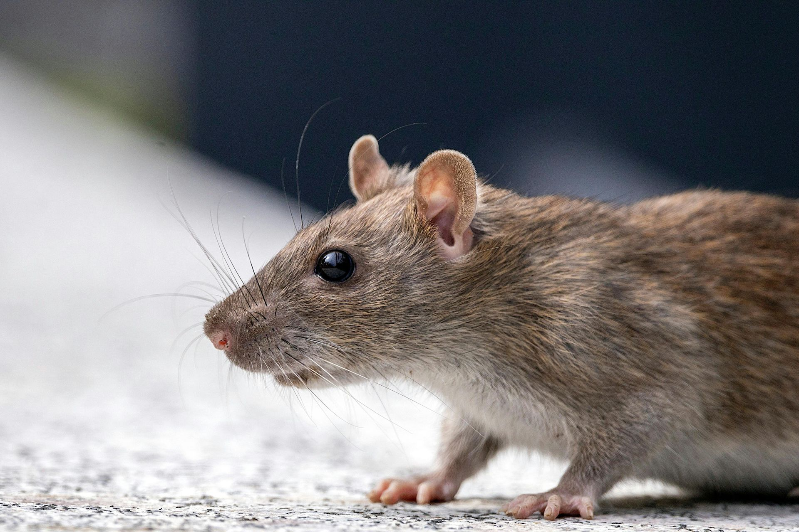
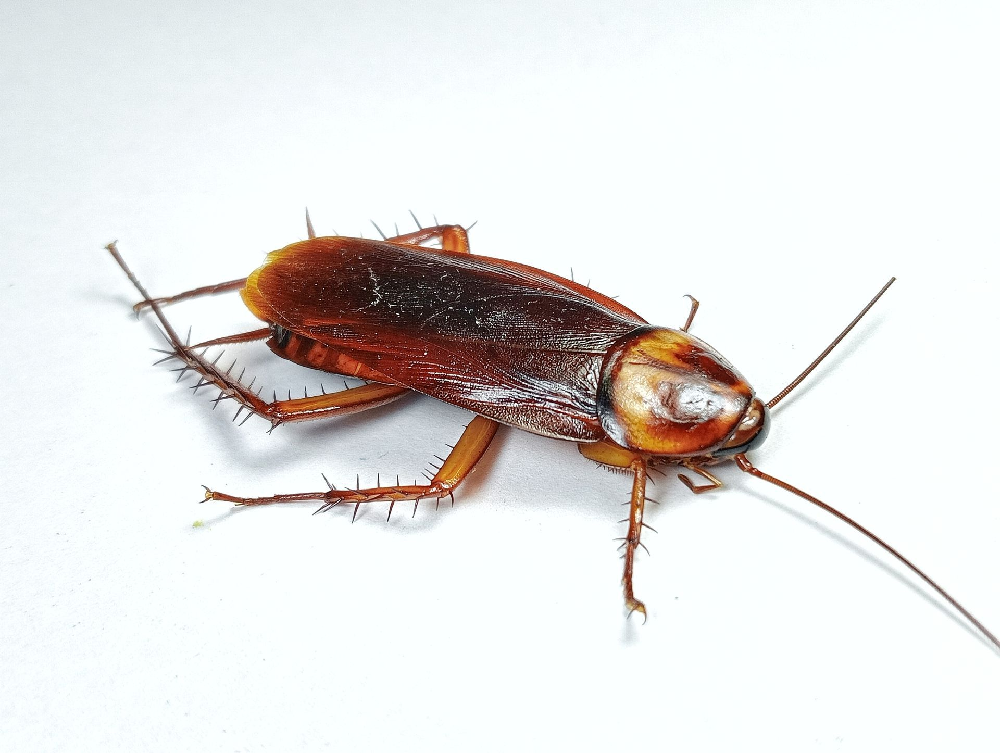
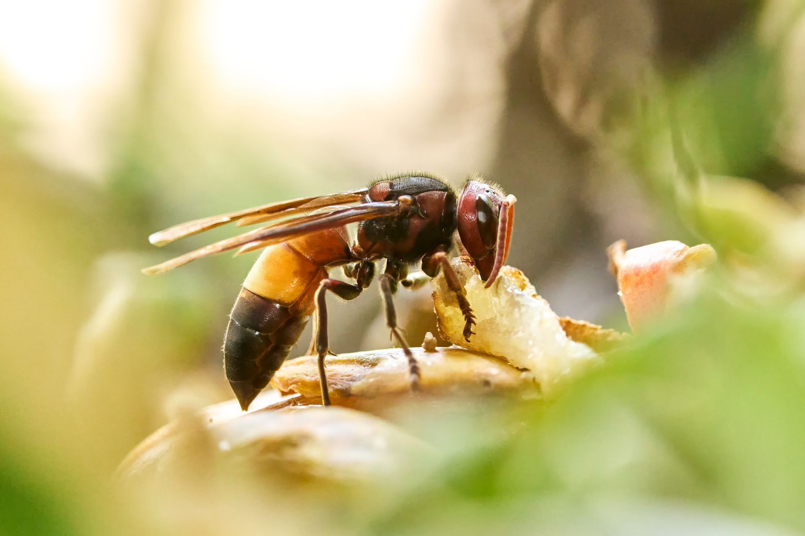
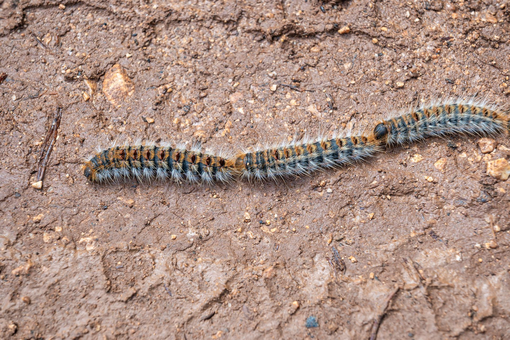
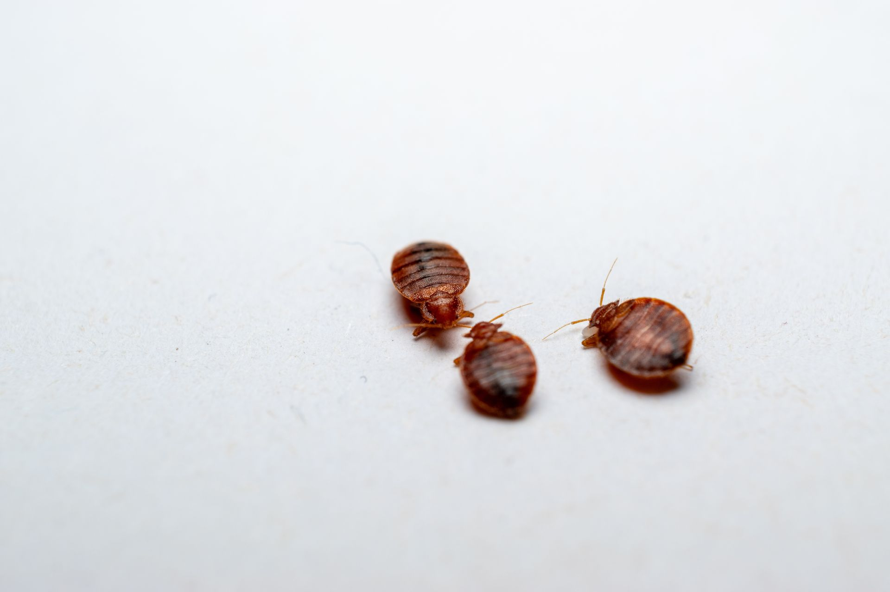
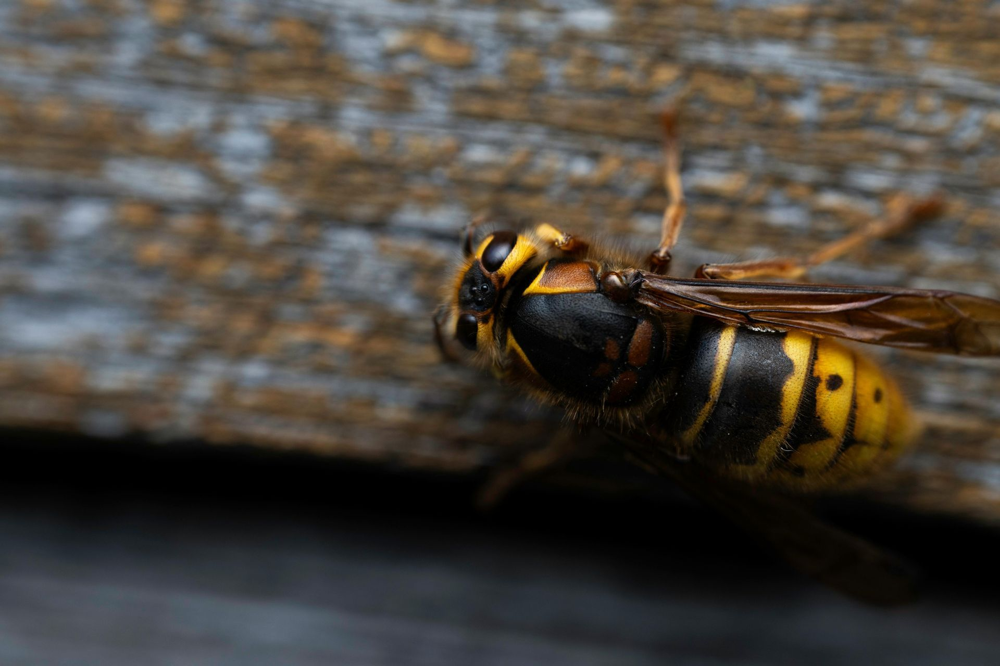

Fiches Nuisibles regroupe en un seul site toutes les informations essentielles sur les nuisibles du quotidien.
De la simple identification aux conseils de prévention, en passant par les méthodes de traitement, chaque fiche est conçue pour vous apporter une réponse claire, fiable et pratique.
Chaque fiche est structurée pour vous guider pas à pas : description du nuisible, signes qui permettent de le reconnaître, méthodes d’intervention efficaces, conseils de prévention, et solutions pour faire appel à un professionnel.
Grâce à cette organisation claire, vous trouverez rapidement l’information dont vous avez besoin, que vous soyez particulier ou professionnel.
Toutes les informations pour identifier, prévenir et éliminer les nuisiblesLes nuisibles font partie intégrante de notre environnement. Rats, insectes, acariens ou taupes, chacun joue un rôle dans l’équilibre naturel, mais peut rapidement devenir une source de désagrément lorsqu’il s’installe dans nos espaces de vie.
Mieux comprendre leur comportement, leurs cycles de reproduction et leurs habitats permet non seulement d’agir efficacement, mais surtout d’éviter les interventions inutiles ou les traitements excessifs.
💡 Sur Fiches Nuisibles, chaque espèce est étudiée avec précision : description, signes de présence, risques sanitaires, et méthodes de traitement éprouvées. Notre mission est de rendre cette information accessible à tous, pour que la lutte contre les nuisibles repose avant tout sur la connaissance et la prévention.
En comprenant les nuisibles, on réduit leur impact tout en préservant l’équilibre de notre environnement.
Les nuisibles se classent en plusieurs catégories selon leur mode de vie et les risques qu’ils représentent. Chaque fiche permet d’en savoir plus sur leurs habitudes, leurs lieux de présence et les solutions adaptées pour les éliminer durablement.
💡 Chaque fiche est détaillée avec une présentation, les signes de présence, les traitements et les conseils de prévention.
Fiches Nuisibles n’est pas un simple guide : c’est une plateforme d’information complète, fondée sur des sources fiables et des retours de terrain.
💬 Grâce à cette approche éducative, chacun peut identifier un nuisible et choisir la solution la plus adaptée, qu’il s’agisse d’une action préventive ou d’une intervention professionnelle.
👉 Fiabilité : les textes sont structurés par étapes pour faciliter la compréhension et l’action.
👉 Clarté : les textes sont faciles à comprendre.
👉 Accessibilité : chaque visiteur peut consulter librement les fiches, poser une question ou utiliser notre outil d’identification pour reconnaître un nuisible.
📷 Décrivez les signes observés, joignez une photo, et laissez-nous vous aider à identifier le nuisible présent chez vous.
Fiches Nuisibles est une plateforme d’information créée en partenariat avec NGAN, société spécialisée dans la lutte contre les nuisibles en France.
L’objectif est simple : mettre à la disposition de tous une base de connaissances fiable, claire et gratuite sur les principales espèces de nuisibles rencontrées dans les habitations, les entreprises ou les espaces publics.
Grâce à son expertise de terrain, l’entreprise partage ici son savoir et ses conseils pratiques pour aider les particuliers et les professionnels à mieux comprendre, prévenir et traiter les infestations.

Découvrez les fiches les plus recherchées sur notre plateforme. Ces articles détaillés vous permettent d’identifier rapidement les nuisibles les plus fréquents et d’adopter les bons réflexes pour les éliminer durablement.





